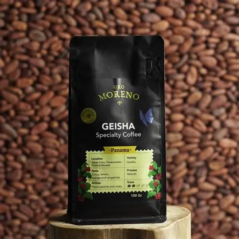
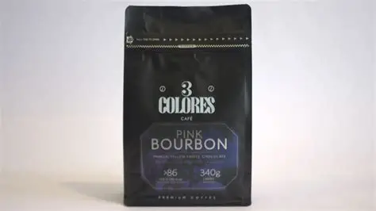
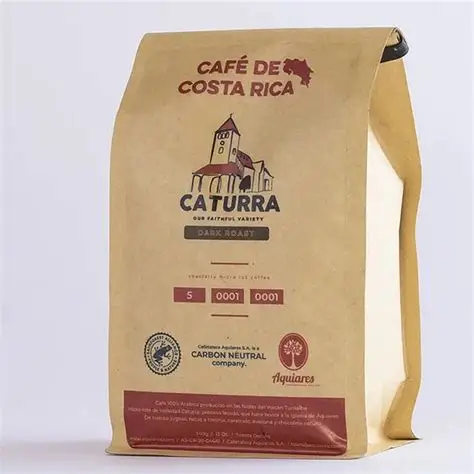

Cafe Origen Peru • Catalogos de Granos de Especialidad
Granos de Finca : Cosechas Coleccionadas
Todos nuestros empaques cuentan con valvula desgasificadora unidireccional y cierre hermético ziploc.
Indicamos si prefieres los granos enteros
calibrada para tu metodo de preparacion favorito.
Nuestra Seleccion de Origenes

1. Geisha San Fernando — Cusco
Cultivado a 1,850 msnm en el valle de La
Convención. Es una de las variedades más codiciadas del
mundo por su complejidad aromática.
Proceso:
Lavado con fermentación controlada de 24 horas
Notas de cata:
Jazmin, flor de azahar, miel de abeja y durazno
Puntuación SCA:
88.5 puntos
Precio sugerido:
S/ 52.00 (bolsa de 250g)
2. Bourbon Rojo de Selva Central — Pasco

Producido en fincas agroforestales de
Villa Rica a 1,600 msnm. Un café
balanceado con gran cuerpo y dulzor prolongado.
Proceso:
Honey Amarillo (secado en camas africanas)
Notas de cata:
Chocolate de leche, panela y frutos secos
Puntuación SCA:
85.0 puntos
Precio sugerido:
S/ 38.00 (bolsa de 250g)
3. Caturra Lavado Clasico — Junín

Procedente de Chanchamayo a 1,500 msnm.
El cafe de mesa por excelencia, ideal para disfrutar en
cafetera italiana (moka) o prensa francesa.
Proceso:
Lavado tradicional con agua de manantial
Notas de cata:
Nuez tostada, caramelo toffee y manzana roja
Puntuacion SCA:
83.5 puntos
Precio sugerido:
S/ 32.00 (bolsa de 250g)
Como Preparar tu Cafe en Prensa Francesa
Para aprovechar los aceites aromaticos de nuestros granos sin
amargar, sigue esta receta estándar probada por nuestro equipo
de baristas:
Molienda:
Muele 20 gramos de cafe con una granulometría gruesa
(similar a la sal de mar).
Agua:
Calienta 300 ml de agua filtrada hasta alcanzar los
92 °C (justo antes del hervor).
Pre-infusión:
Vierte 60 ml de agua sobre el cafe en la prensa, remueve
suavemente con una cuchara de madera y espera
30 segundos para liberar los gases naturales.
Extracción:
Vierte los 240 ml restantes de agua de forma constante y
coloca la tapa con el embolo arriba sin bajarlo.
Reposo:
Deja reposar el cafe durante 4 minutos exactos.
Prensado y servido:
Baja el embolo lentamente con presión suave y sirve
inmediatamente en tu taza favorita.